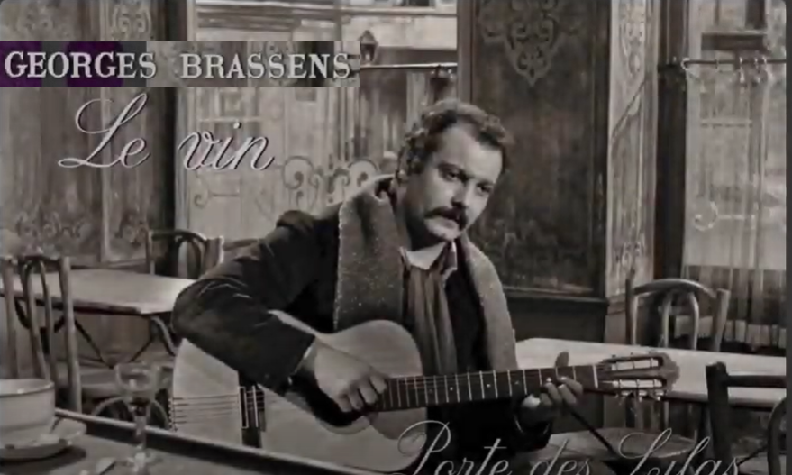

Le vin
Wine
Georges Brassens (1957)
|
|
NOTES
|
[1] Avoir la gueule de bois means to have a hangover, but is, litterally, to have a wooden mouth. « Tourner sept fois sa langue dans sa bouche avant de parler» ( turn your tongue seven times in your mouth before speaking) conveys the idea that you shouldnt speak unless you are really sure about what you are going to say. Brassens mischievously combines the two expressions, ascribing the drunkard an illusory prudence: « Before telling my life story and making speeches, in my wooden mouth I turned seven times my tongue ». More than ever, to this literal translation, a faithful rendering of the hesitations in a drunkard's speech, the main feature of the original song, seems preferable. "Jus d'octobre" (juice of October) means "wine", of course. [2] "Chou, souche": in the popular folk-tale babies are usually born from cabbages. "Souche" means "stock of a vine". . [3] "Savoir-boire" (science of wine) is here instead of "savoir-vivre", ability to live elegantly, observance of the usages of fashionable society. . [4] "Garde-à-vue" means "police custody". "On se garde à vue" means "One should keep a watchful eye " (on a spare bottle of wine). . [5] "En cas de soif une poire" alludes to a phrase meaning "to keep a pear for thirst" or "to keep something for a rainy day". [6] "Lait de l'automne" (milk drawn in fall): again "wine". [7] "Gros bleu qui tache" means "sturdy red wine that stains glasses, napkins and tableclothes". [8] "La Seine", here translated as "Our river", refers to the river flowing throug Paris. This song, along with four others ("Les Lilas", "Au bois de mon coeur", "Comme hier", "L'amandier") were sung by their composer, Georges Brassens, in René Clair's 1957 film. The title of this only film ever shot by Brassens, "Porte des Lilas", refers to a popular district of Paris. |
[1] à [7] explications de certains gallicismes difficiles à traduire. [8] "La Seine" est traduit par "notre fleuve". Cette chanson, ainsi que quatre autres ("Les Lilas", "Au bois de mon coeur", "Comme hier", "L'amandier") étaient chantées par leur compositeur, Georges Brassens, dans le film de René Clair de 1957. Le titre de ce seul film jamais tourné par Brassens, "Porte des Lilas", désigne un quartier populaire de Paris. [9] Et voici le poème, récité par Georges Brassens, un traitement de faveur accordé à un texte particulièrment subtil (et rétif à la traduction): And here is the poem, recited by Georges Brassens, a special treatment granted to a particularly subtle text (and reluctant to translation): . Brassens récite "Le vin" |

|
Brassens chante "Le vin" |
Brassens chante "Le vin"  3 reprises du même chant: une expressivité toujours plus grande 3 records of the same song with ever greater expressiveness |
Brassens chante "Le vin" |